- Problem 1. (33 points)
In the circuit below, the voltage source is
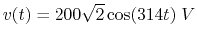,
and 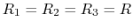, 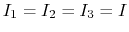 (rms value), 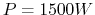. Find 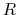,  ,
,
 and
and  .
.

Solution:
Represent  by
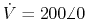, and the voltage across the parallel
branches (RC and RL) by 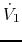, also represent the currents by 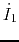,
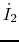, 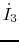. Since 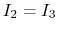, we have 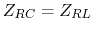, but also as
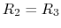, we have
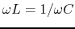, i.e., the circuit is at resonance with
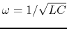, therefore is in phase with
by
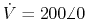, and the voltage across the parallel
branches (RC and RL) by 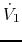, also represent the currents by 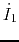,
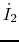, 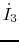. Since 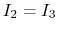, we have 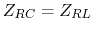, but also as
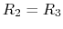, we have
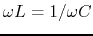, i.e., the circuit is at resonance with
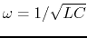, therefore is in phase with  , and
, and
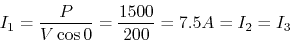
As 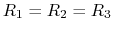, we also know that they each dissipate 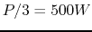, and
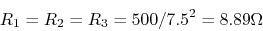
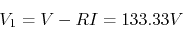
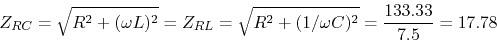
Solving these we get
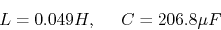
Alternatively, since
 , and 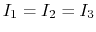, we know
they form an equilateral triangle. Moreover, since is in phase with
, we have:
, and 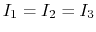, we know
they form an equilateral triangle. Moreover, since is in phase with
, we have:
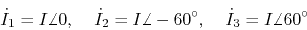
as current thru is ahead voltage, current thru lags behind voltage.
i.e., the voltage across  is leading the voltage across by 60 degrees:
is leading the voltage across by 60 degrees:
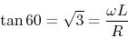
and the voltage across  is lagging behind the voltage across by 60 degrees:
is lagging behind the voltage across by 60 degrees:
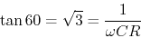
Solving these for and , given and 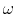, we get the same results
as above.
- Problem 2. (33 points)
In the circuit below, 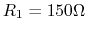,  , 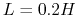, 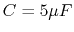.
The input voltage is
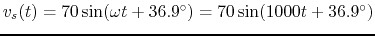.
The system is in steady state before the switch is closed at
, 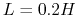, 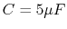.
The input voltage is
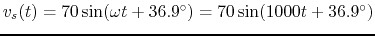.
The system is in steady state before the switch is closed at  . Find voltage
. Find voltage
 across and current 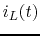 through for
across and current 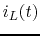 through for  .
.

Solution:
Find :
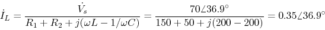
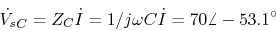
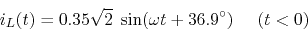
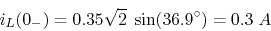
For , the switch is closed,
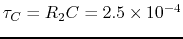,
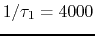,
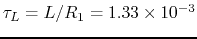, 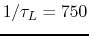.
As the steady state of is zero, we can find to be
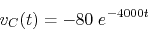
Find steady state of :
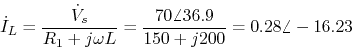
the steady state of is
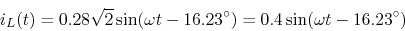
Evaluating at we get:
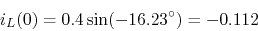
The complete is
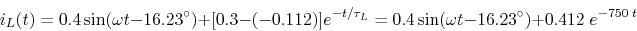
- Problem 3. (34 points)
In the circuit shown below, the voltage source
 volts,
and the effective values of the three currents 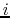,
volts,
and the effective values of the three currents 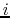,  and
and  are the same. The
total real energy comsumed by the circuit is 866 W. Find the values of , and .
(Hint: represent all currents
are the same. The
total real energy comsumed by the circuit is 866 W. Find the values of , and .
(Hint: represent all currents  , 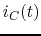, and voltage as phasors
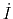, 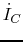,
, 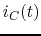, and voltage as phasors
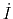, 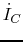,  , , and draw them as vectors to figure out
how they are related.)
, , and draw them as vectors to figure out
how they are related.)

Solution:
Let
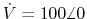 be the phasor representation of so that
where
, i.e.,  Hz. We have
Hz. We have
where
 . Due to KCL, we hav
. Due to KCL, we hav
but also as given
we conclude that these three currents are equal in magnitude and apart in
phase angle, as shown below:
where is  ahead of , is
ahead of , is
 ahead of , which in turn is
ahead of , which in turn is  ahead of . Therefore,
ahead of . Therefore,
As the real power is
we get
therefore we also get
and
But from above
we get:
Since we also have:
solving this we get
- Problem 3. (34 points)
- (a) Find the frequency response function of the circuit shown in
the figure, i.e., find the ratio of the voltage across load resistor
and the input sinusoidal voltage
 .
.
- (b) Similar to a simple RCL series resonant circuit, this circuit
can be used as a band-pass filter to pass signals around its resonant
frequency. Find this resonant frequency at which
is maximized in terms of the component values , ,
and .
- (c) Different from the simple RCL series resonant circuit, this
circuit also has a stop band, i.e., around a certain freqnecy
the output voltage is zero. Find this frequency
also in terms of the circuit components.
- (d) Given and the two inductors are identical,
determine the values of and , so that
. What is the corresponding stop frequency ?

Solution:
- Find total impedance of the circuit:
- At the resonant frequency
, the imaginary
part of the impedance is zero (minimum), i.e.,
- At the stop frequency , the imaginary part of the
impedance is infinity (maximum), i.e.,
- As , and we have
This is true for any load of .